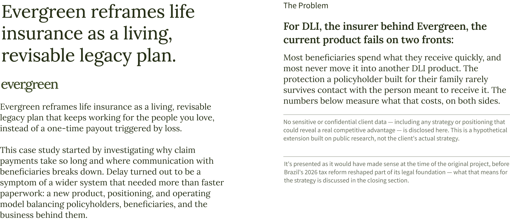
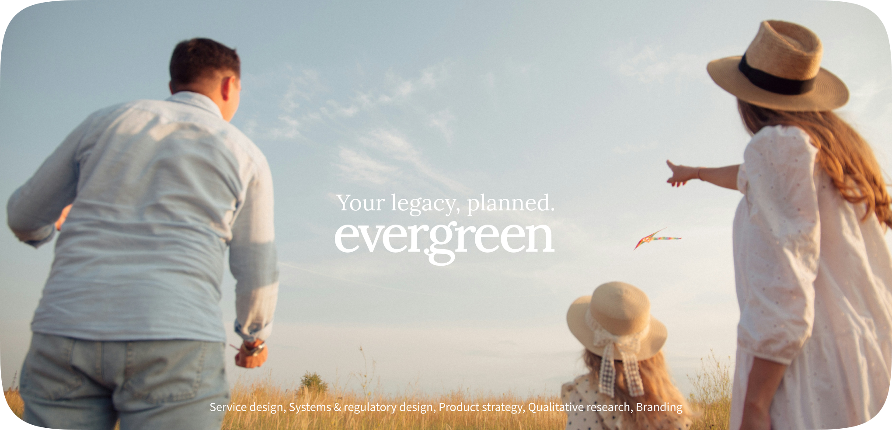
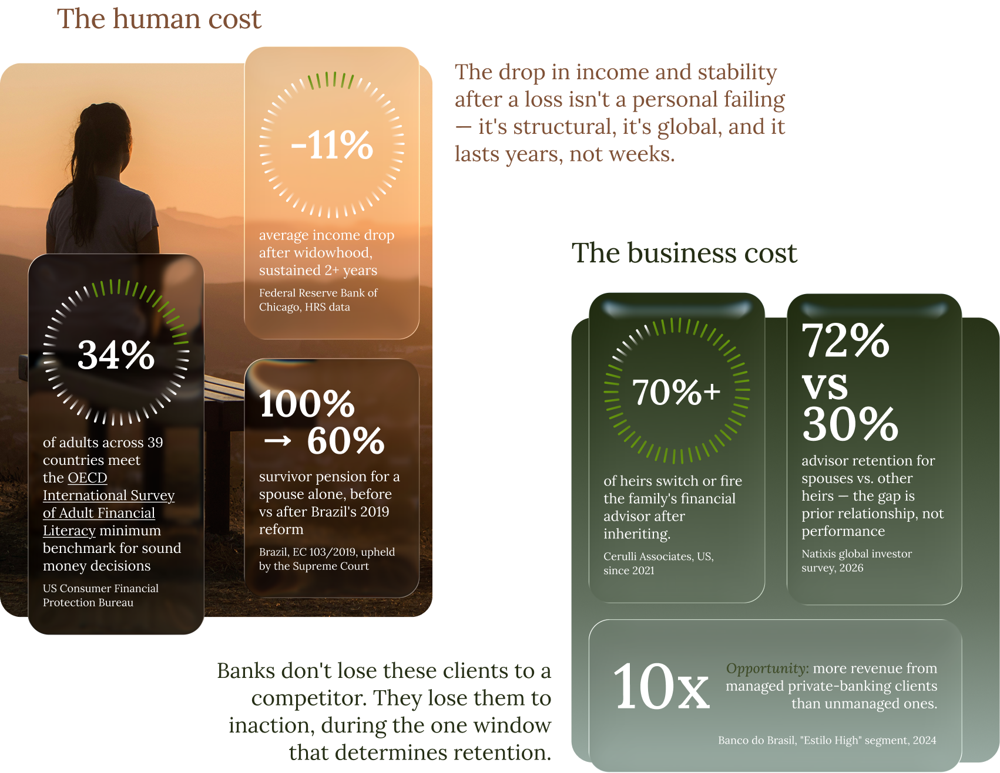
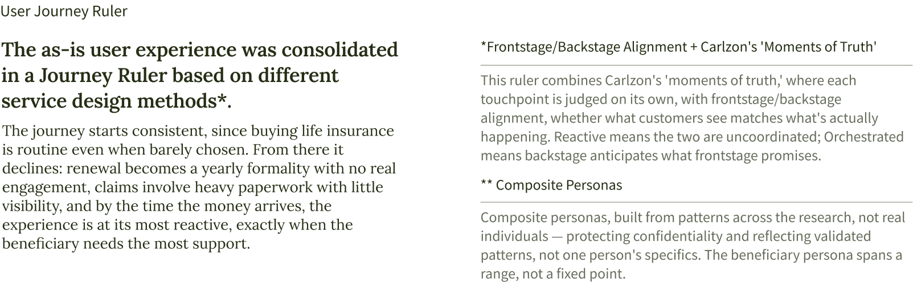
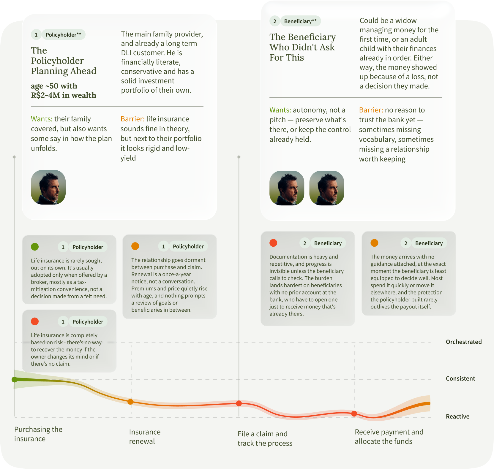
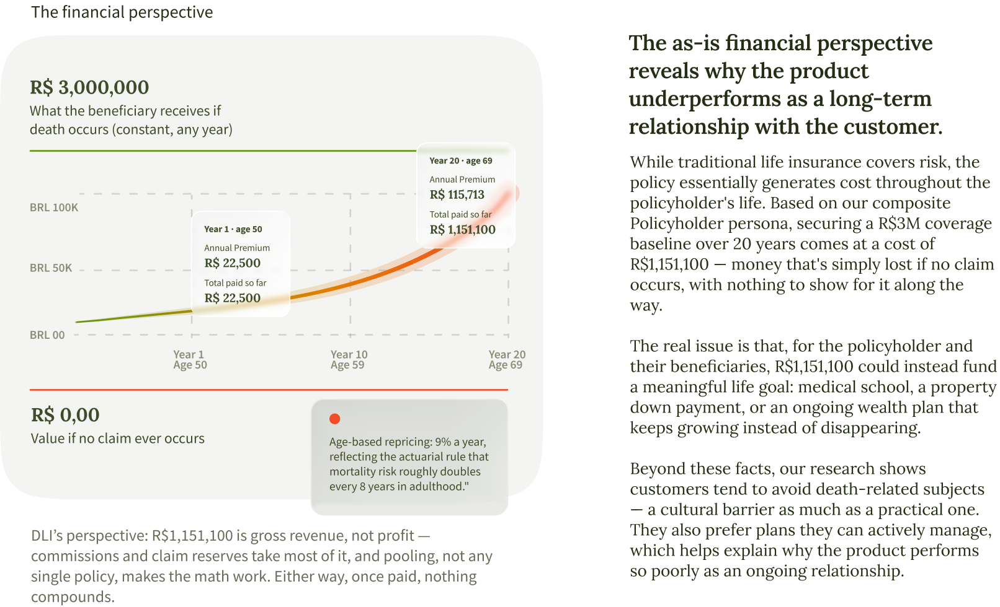
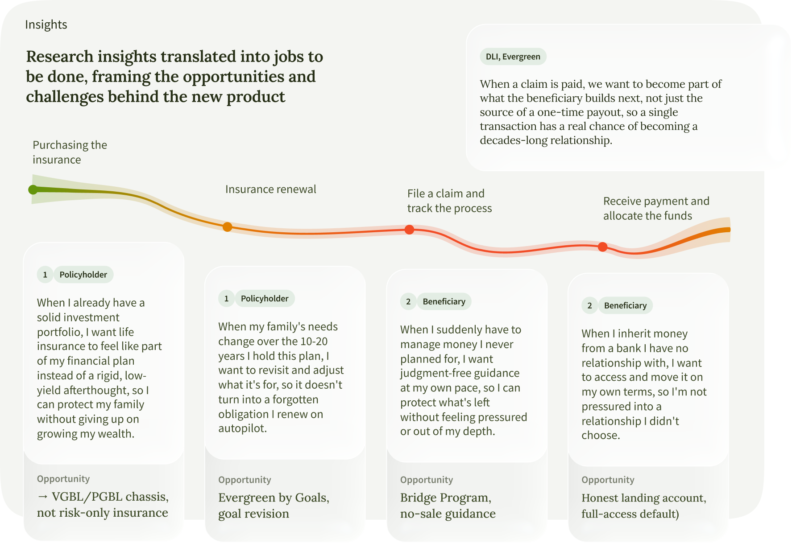
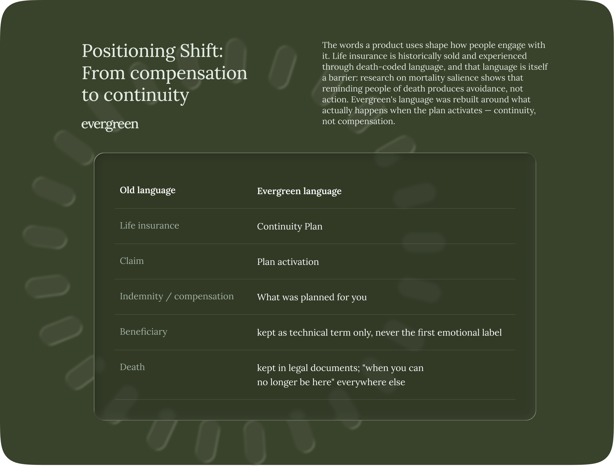
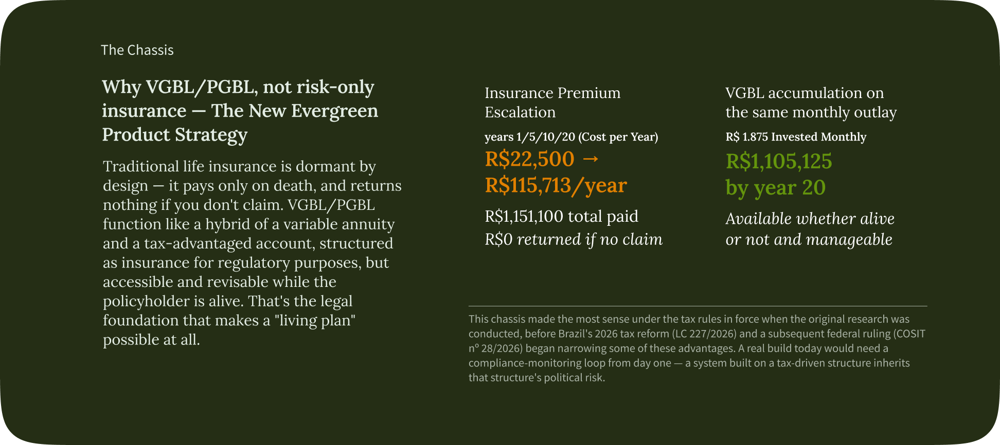
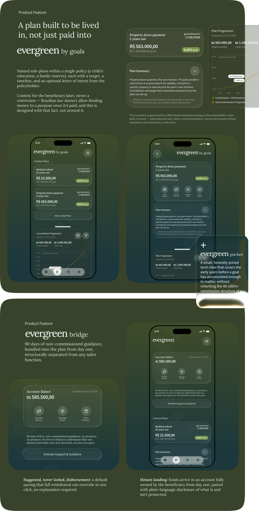
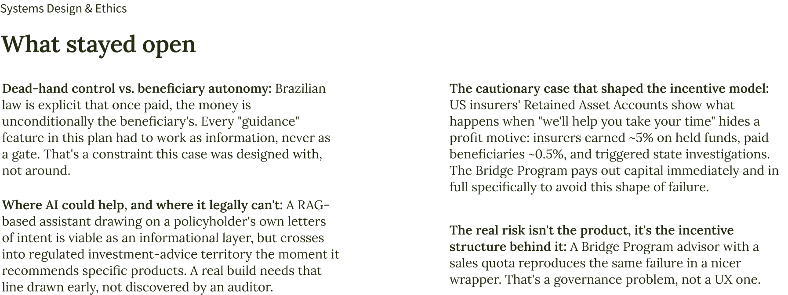
 ← Go back
← Go back
Financial Services
Life Insurance
Evergreen reframes life insurance as a living, revisable legacy plan that keeps working for the people you love, instead of a one-time payout triggered by loss.
This case study started by investigating why claim payments take so long and where communication with beneficiaries breaks down. Delay turned out to be a symptom of a wider system that needed more than faster paperwork: a new product, positioning, and operating model balancing policyholders, beneficiaries, and the business behind them.










